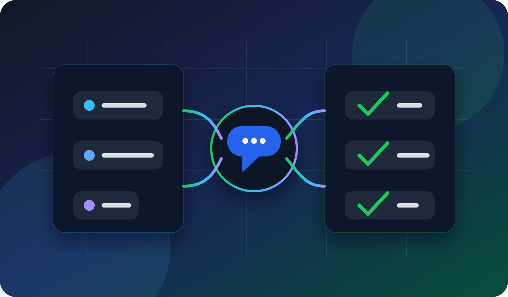

Comment mettre en place un agent IA de recouvrement qui echange directement avec mes clients debiteurs ?
La bonne approche consiste a commencer par un agent IA de recouvrement amiable: il relance, explique, collecte une reponse et prepare une suite, mais il n'agit pas sans garde-fous.

1. Definir le perimetre: recouvrement amiable uniquement
Pour une PME, le premier cas d'usage ne doit pas etre agressif. L'agent IA contacte le client debiteur pour rappeler une facture, clarifier une situation, proposer une prochaine etape ou transmettre une contestation a l'equipe.
La page pilier agent IA recouvrement doit ensuite recevoir un lien depuis cet article, car elle porte l'intention commerciale principale.
2. Preparer les donnees utiles
- Nom du client et canal de contact autorise.
- Reference facture, echeance et statut.
- Historique de relance deja envoye.
- Regles internes: ton, delai, cas a escalader.
- Personne responsable cote equipe.
Ne donnez pas a l'agent un acces global a toute la comptabilite. Un bon agent voit ce qui est necessaire pour la conversation, rien de plus.
3. Ecrire les messages comme une FAQ de debiteur
Les clients debiteurs posent souvent les memes questions: facture non recue, litige, delai de validation interne, erreur de reference, demande de duplicata, souhait de parler a une personne. Chaque question doit avoir une reponse courte et une regle d'escalade.
4. Encadrer ce que l'agent peut proposer
L'agent peut demander une intention de paiement, envoyer un duplicata, proposer un rappel ou transmettre une contestation. Il ne doit pas improviser une decision sensible. Les accords particuliers doivent etre valides par un humain.
Pour le cadrage general des donnees, reliez aussi ce sujet a agent IA, RGPD et AI Act.
5. Prevoir les escalades obligatoires
- Client conteste la facture.
- Client signale une situation fragile.
- Client demande un accord non prevu.
- Client refuse le canal automatise.
- Conversation devient conflictuelle.
6. Mesurer avant d'etendre
Les premiers indicateurs a suivre sont simples: messages envoyes, reponses obtenues, reprises humaines, erreurs, contestations et delais de resolution. Ne cherchez pas a tout automatiser le premier jour.
7. Maillage SEO a mettre en place
Reliez cet article a agent IA recouvrement, agent IA commercial, agent IA support et agent IA PME. Cela transforme une question longue en cluster SEO utile.
FAQ
Un agent IA peut-il contacter directement mes clients debiteurs ?
Oui, si le cadre est clair: message amiable, donnees limitees, information transparente et reprise humaine facile.
Faut-il commencer par email, SMS ou appel vocal ?
Commencez par le canal deja accepte par vos clients. L'appel vocal peut venir ensuite pour les dossiers ou la reponse ecrite reste insuffisante.
Comment eviter les erreurs ?
Limitez les actions possibles, testez sur un petit volume, relisez les conversations et bloquez automatiquement les cas contestes.
Quel est le meilleur premier workflow ?
Le meilleur workflow est: detection facture en retard, rappel courtois, duplicata si besoin, collecte d'une reponse, puis escalade humaine si contestation.